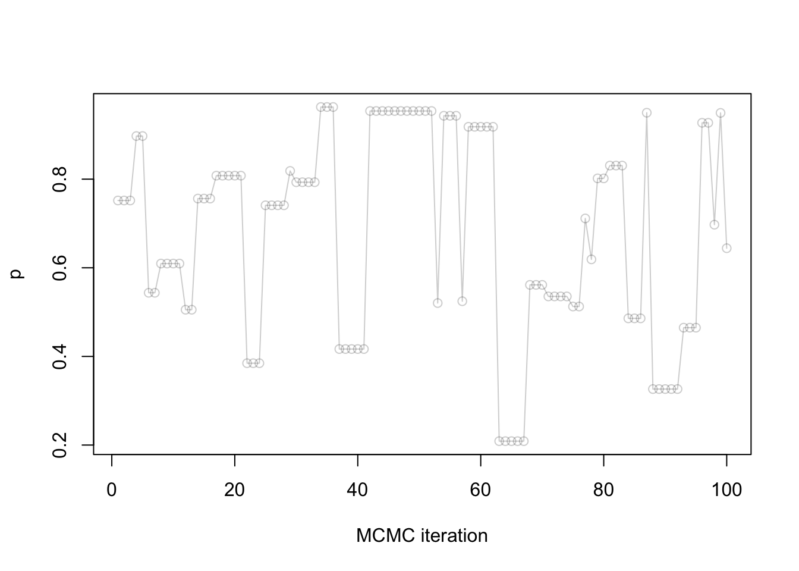
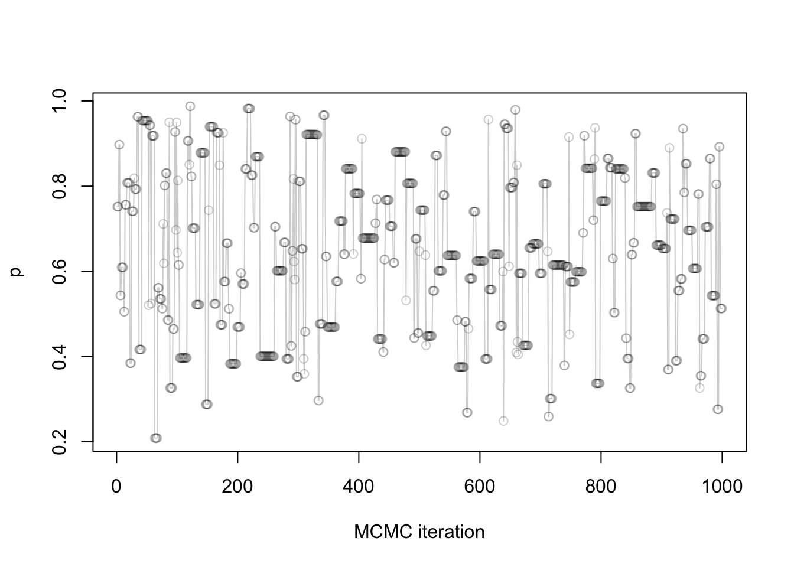

source("../exercises/ex07_scaffold.R")
source("../../solutions/sol07_mh.R")
samples = simple_mh(gamma_beta_binomial, 0.5, 1000)Metropolis-Hastings
Outline
Topics
- Metropolis-Hastings (MH) algorithm with symmetric proposal
- Trace plots from MH
- Histograms from MH
Rationale
The vast majority of MCMC algorithms are based on the Metropolis-Hastings (MH) algorithm.
Learning MH is the first step towards understanding why MCMC algorithms such as Stan work. Some knowledge of how MCMC works is useful to identify when it fails (“MCMC diagnostic”). There are also situations where you will have to write your own MCMC algorithm (something we will practice more in the last weeks of the course).
Goal
- Just as SNIS, our goal is to compute \(\mathbb{E}[g(X) | Y = y]\).
- MH will allow us to approximate this conditional expectation.
How is this different than the simple Monte Carlo method that we used in Ex1.Q.1.3?
Click for answer
We used simple Monte Carlo to compute an expectation without conditioning on \(Y = y\), i.e. \(\mathbb{E}[g(X)]\).
MH, just like SNIS, allows us to take into account observed data.
Problem formulation
MH is used to solve the following type of problems:
- Input: You are given an unnormalized distribution \(\gamma(x)\)
- Example: the numerator in Bayes rule.
- Output: You want to approximate an expectation…
- …under the renormalized target distribution \(\pi(x) = \gamma(x) / Z\).
- Mathematically: MH provides an approximation to \(\mathbb{E}_\pi[g(X)] = \sum \pi(x) g(x)\).
Terminology review: \(g\) is called a test function. Think about it as specifying a query.
Examples: of test functions
- To compute \(\mathbb{E}[X | Y = y]\), use \(g(x) = x\).
- Let’s say you want to approximate \(\mathbb{P}(X = 1 | Y = y)\)…
- …what function \(g(x)\) would you take?
Click for choices
- \(g(x) = \mathbb{1}[x = 1]\)
- \(g(x) = x \mathbb{1}[x = 1]\)
- \(g(x) = x\)
- \(g(x) = x^2\)
- None of the above
Click for answer
Recall: take \(g(x) = \mathbb{1}[x = 1]\), then we have
\[\mathbb{E}_\pi[g(X)] = \sum \pi(x) g(x) = \mathbb{E}[\mathbb{1}[X = 1] | Y = y] = \mathbb{P}(X = 1 | Y = y),\] where \(\pi(x) = p(x | y)\).
MH’s extra ingredient: the proposal
MH requires a proposal \(q(x' | x)\):
- given a current point \(x\),
- \(q(\cdot|x)\) is a density or PMF;
- it is used to decide where to go next.
Example: standard normal centered at the current point, \[q(x' | x) \propto \exp\left(- \frac{1}{2} (x - x')^2 \right).\]
Key difference compared to SNIS:
- the proposal can depend on the current value \(x\).
- Why this is useful:
- Once we find a “good neighborhood”, i.e., a region where the posterior density is high,
- having \(q(\cdot|x)\) depend on current value allows us to stay for a while in that good neighborhood.
Today:
- we assume \(q\) is symmetric, i.e., \(q(x | x') = q(x' | x)\).
- We will relax this later.
Symmetric proposal MH algorithm
Inputs: unnormalized target \(\gamma\), proposal \(q\), number of iterations \(M\).
Algorithm:
- Initialize \(X^{(0)}\) arbitrarily
- For \(m = 1, 2, \dots, M\) do:
- Denote the proposal at iteration \(m \in \{1, 2, \dots, M\}\) by: \[\tilde X^{(m)}\sim q(\cdot | X^{(m-1)}).\]
- Compute the MH ratio: \[R^{(m)}= \frac{\gamma(\tilde X^{(m)})}{\gamma(X^{(m-1)})}.\]
- Sample an acceptance Bernoulli: \[A^{(m)}\sim {\mathrm{Bern}}(\min(1, R^{(m)})).\]
- If \(A^{(m)}= 1\), we accept the proposed sample: \[X^{(m)}= \tilde X^{(m)},\]
- Else, \(A^{(m)}= 0\), and we reject the proposed sample and stay at previous position: \[X^{(m)}= X^{(m-1)}.\]
Output: equally weighted samples \(X^{(1)}, X^{(2)}, \dots, X^{(M)}\).
Demo: Have a look at this interactive animation showing MH on a two-dimensional target (green arrow shows accepted proposal, red arrow, rejected).
Intuition
- When proposing to a higher point under the posterior density, we have:
- \(\gamma(\tilde X^{(m)}) > \gamma(X^{(m-1)})\)
- hence \(R^{(m)}> 1\),
- so \(\min(1, R^{(m)}) = 1\),
- and \(A^{(m)}\) is always one, i.e. always accepted!
- When proposing to a lower point under the posterior density, we have:
- \(\gamma(\tilde X^{(m)}) < \gamma(X^{(m-1)})\)
- hence \(R^{(m)}< 1\),
- so \(\min(1, R^{(m)}) = R^{(m)}\),
- \(A^{(m)}\sim {\mathrm{Bern}}(\gamma(\tilde X^{(m)})/\gamma(X^{(m-1)}))\),
- i.e., acceptance probability is a ratio of posterior densities at two points (proposed vs previous).
Visualization
In the exercise this week, you will implement MH with a standard normal proposal.
Once your exercise is complete you will be able to call your function as follows:
Trace plot
Let us visualize the first 100 samples:
plot(samples[1:100],
xlab = "MCMC iteration",
ylab = "p",
type = "o",
col = rgb(red = 0, green = 0, blue = 0, alpha = 0.2))
Question: Notice that many points take exactly the same value, why is that?
Click for choices
- It is a software defect (bug)
- These are the points where the acceptance ratio was smaller than 1.
- These are the points where the acceptance ratio was greater than 1.
- These are the points where \(A^{(m)}= 1\).
- These are the points where \(A^{(m)}= 0\).
Click for answer
These are the points where \(A^{(m)}= 0\), i.e. the rejected points.
Terminology: the above plot (sample as a function of MCMC iteration) is called a trace plot.
Full trace plot:
plot(samples,
xlab = "MCMC iteration",
ylab = "p",
type = "o",
col = rgb(red = 0, green = 0, blue = 0, alpha = 0.2))
Histogram
As with Stan (another MCMC algorithm we saw earlier this week), we can use a histogram to summarize the posterior:
hist(samples)To connect the two pictures, it is useful to visualize the histogram rotated as follows:
source("../blocks/plot_traces_and_hist.R")
plot_traces_and_hist(samples)Further readings
- Geyer’s course notes on MCMC, available from the author’s website
- Handbook on MCMC [Available online via UBC Library]
- More advanced text on the theory [Available online via UBC Library]